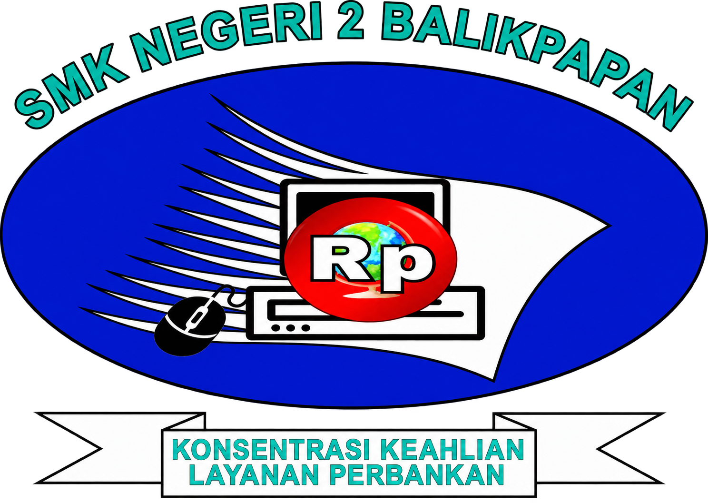

Apa itu PKM?
Kompetensi Keahlian Perbankan dan Keuangan Mikro(PKM) merupakan salah satu kompetensi keahlianAkuntansi dan Keuangan yang ditempuh selama 3 tahun masa belajar. Sebagai rumpun Bidang Keahlian Bisnis Manajemen, untuk mempersiapkan peserta didik secara profesional dalam tugas-tugas dan pekerjaan di lingkup perbankan dan keuangan.
VISI
Menghasilkan lulusan yang diakui dan berdaya dalam penerapan ilmu pengetahuan dan teknologi bidang akutansi, keuangan, dan perbankan yang akutanbel, berkarakter, dan beretika.
Menjadi program studi yang unggul dan profesional dalam pengembangan ilmu pengetahuan akutansi dan perbankan yang secara konsisten mewujudkan perpaduan iman, teknologi, dan budaya indonesia yang mampu menghadapi perubahan baik secara nasional maupun global.
MISI
Mendidik peserta didik dengan keahlian san keterampilan dalam bidang keahlian Bisnis dan Manajemen, khususnya keahlian Akuntansi dan Perbankan agar dapat bekerja, baik secara mandiri atau mengisi lowongan pekerjaan di dunia usaha dan dunia industri pada saat ini maupun masa yang akan datang.
Mendidik peserta didik agar mampu memilih karir, kompetensi, dan Manajemen. Khususnya keahlian akuntansi dan perbankan.
Menyelenggarakan pendidikan dan keterampilan dengan mengedepankan keunggulan, kemandirian, kedisplinan, kejujuran, tanggung jawab, berjiwa wirausaha, serta memiliki sikap profesional yang berorientasi massa depan.